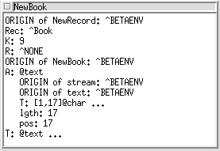
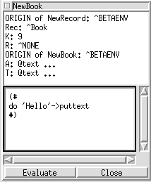

Debugger
The Object View

Figure 5: The Object View
The state of complex objects is displayed in object views as the result of selecting Current Object from the Windows menu, double-clicking an object reference in a stack view or double-clicking a line in another object view.
The name of the pattern of which the object is an instance is displayed as the name of the object view window. The pattern name is prefixed by the origin chain from the pattern to the fragment in which the pattern is declared (if Long Object Names is enabled). For example, an object view having the name Object: lib.x.y displays an instance of the pattern y, declared nested in the pattern x contained in the fragment lib.
Each line in an object view corresponds to either a static or dynamic reference contained in the object. Chars, Booleans, Integers and Reals are displayed directly by value whereas attributes of more complex type are described by their pattern name.
When the current object is a "do-part-object" the surrunding object will be displayed instead.
Browsing objects:
The object browser uses abstract presentation of the objects presented. This means that nested part objects are initially shown contracted, i.e. as three dots. By double-clicking a line of the object view ending in '...', the hidden details will be shown. By double-clicking the same line again, the details are hidden.
Each line in the object view corresponds to some attribute of the object. Simple attributes (@Char, @Integer, ...) cannot be further detailed, whereas other kinds of attributes can. Default when double-clicking some attribute is as follows:
- Dynamic references: A new object view is opened on the referred object. If some object view on that object is already open, visual feedback (wriggling and highlighting) will signal this fact. The same behaviour goes for origin references as well.
- Static references: If the attribute is contracted, double-clicking shows an extra level of detail in the same window. Otherwise the attribute is contracted.
- Repetition references: If the repetition is contracted, double-clicking unfolds the repetition by showing a line for each index in the repetition. Otherwise the repetition is contracted.
- Pattern references: Currently a more detailed view on pattern references is not implemented.
Object View menus:
In addition to the default menu items for all views (described above), an object view has a number of additional items in the name field popup menu, i.e. the menu popped up by clicking the right mouse-button in the name field of an object view. These are described in turn below:
- Tries to resize the object view to a reasonable size.
- This nested menu is a list of object attributes that are not currently visible. By default this list includes the origin attributes. By selecting an entry in this menu, the corresponding attribute is made visible. It may later be re-hidden as explained below.
- Default when double-clicking dynamic references is to open a new object view showing the object referred. By selecting "Fast Browse Mode", the default is changed into showing the object referred in the same window, replacing the previous contents. This allows for fast browsing without opening unnecessary object views. Default may be reset by choosing "Fast Browse Mode" again.
- The browser maintains a stack of objects visited during Fast Browse Mode. By selecting "Go Back", the previous object on that stack in reshown in the current window.
- When clicking the right mouse-button inside an object view, a sligthly different menu than the name field menu pops up. The entries of this menu, the "attribute menu" are as follows:
- Default when double-clicking static references is to detail the corresponding attribute in the current window. Alternatively one may single-click the static attribute and then select "Open Separate". This opens a new object view on the part object.
- If a static reference attribute is double-clicked in order to detail the view, and another object view on that part object is already open, the existing object view is highlighted, and the attribute not detailed. If one wants to detail in the current window anyway, one may either close the existing object view, or single-click to select the attribute and then choose "Open inline" from the object state popup menu.
- Has the same effect as double-clicking a complex attribute that is already detailed. I.e., the attribute is contracted.
- By single-clicking an attribute in the object view and then selecting "Hide Attribute", the attribute is hidden. Note that "contracted" and "hidden" is not the same thing. Contraction replaces a complex attribute by a single line ending with '...'. Hiding an attribute means moving it completely out of sight.
- This entry corresponds to the menu entry with the same name in the name field popup menu. However, instead of showing a list of hidden attributes for the main object, a list of attributes hidden in the currently selected complex attribute is shown. I.e., to show a hidden attribute of a nested part object, single-click that part-object and then choose "Show Attribute" from the object state popup menu.
- This entry appends an evaluator field to the objectview.
The evaluator field is a code-editor. When you press the "Evaluate"-button is the
code in the editor compiled and linked into the debuggee and executed. The code in executed
in the context the object, corresponding to the view.

The evaluator.